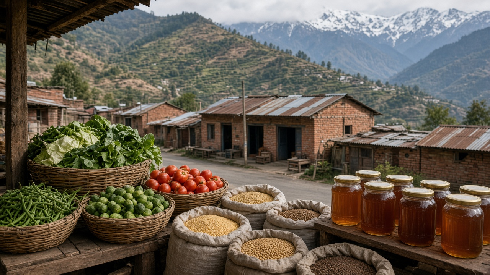

Food Labels, Certification, and Policy
Published on August 20, 2026
Food labels and certification schemes translate farming practices into trusted information on packages, menus, and market displays. Organic, fair trade, geographic indication, animal welfare, and carbon-footprint labels help consumers align purchases with health, ethical, and environmental values. Standards define allowable inputs, labor conditions, traceability requirements, and audit procedures verified by accredited inspectors. Clear labeling reduces confusion but requires enforcement to prevent fraud and misleading claims that erode public trust in sustainable food markets.
Policy frameworks establish mandatory nutrition facts, allergen declarations, date-marking rules, and limits on health claims to protect public safety. Governments may subsidize certification costs for smallholders, recognize participatory guarantee systems, or harmonize standards across borders to ease trade. Digital traceability—from farm records to blockchain ledgers—supports recall efficiency and provenance storytelling. Retailers adopt private standards that sometimes exceed legal minima, creating both opportunity and compliance burdens for suppliers. Multistakeholder consultations ensure that labels reflect scientific evidence and cultural dietary norms.
Effective food policy balances consumer empowerment with producer viability, avoiding label proliferation that overwhelms shoppers. Education campaigns teach how to read ingredient lists, portion sizes, and sustainability seals critically. International cooperation aligns pesticide residue limits and GMO disclosure rules where appropriate. Retailers and food-service operators increasingly publish sustainability scorecards alongside price tags, helping institutional buyers compare suppliers on water use, labor practices, and packaging waste. Independent audits and whistleblower protections further deter counterfeit labels, ensuring that certification marks retain meaning in crowded supermarket aisles. By strengthening transparent certification and coherent regulation, societies reward farmers who invest in ecological stewardship while giving eaters the knowledge to choose food that supports fair, safe, and sustainable systems from field to fork.
खाद्य लेबल र प्रमाणीकरणले कृषि अभ्यासलाई प्याकेज, मेनु र बजार प्रदर्शनमा भरोसायोग्य जानकारीमा बदल्छ। जैविक, न्यायपूर्ण व्यापार, भौगोलिक संकेत, पशु कल्याण र कार्बन-पदचिह्न लेबलले उपभोक्तालाई स्वास्थ्य, नैतिक र वातावरणीय मूल्यसँग मिल्ने खरिद गर्न मद्दत गर्छ। मापदण्डले स्वीकृत सामग्री, श्रम अवस्था, पछ्यौटा आवश्यकता र अडिट प्रक्रिया निर्धारण गर्छ। स्पष्ट लेबलले भ्रम कम गर्छ, तर दण्डनी बिना झूटा दावाले बजार विश्वास कमाउँछ।
नीतिले अनिवार्य पोषण तत्व, एलर्जी घोषणा, मिति-चिन्ह नियम र स्वास्थ्य दावा सीमा निर्धारण गर्छ। सरकारले साना किसानलाई प्रमाणीकरण खर्च अनुदान, सहभागिता ग्यारेन्टी प्रणाली मान्यता वा सीमा-पार मापदण्ड मिलाउन सक्छ। डिजिटल पछ्यौटा—खेत अभिलेखदेखि ब्लकचेन खातासम्म—रिकल र उत्पत्ति कथा समर्थन गर्छ। खुद्राले कानुनी न्यूनतमभन्दा बढी निजी मापदण्ड अपनाउँछ, आपूर्तिकर्तालाई लाभ र बोझ दुवै दिन्छ। बहु-पक्षीय सल्लाहले लेबललाई वैज्ञानिक प्रमाण र सांस्कृतिक आहारसँग मेल खान्छ।
प्रभावकारी खाद्य नीतिले उपभोक्ता सशक्तिकरण र उत्पादक जीविकोपार्जन सन्तुलन गर्छ, धेरै लेबलले क्रेता अलमलमा नपारोस्। शिक्षा अभियानले सामग्री, भाग र दिगो छाप कसरी पढ्ने सिकाउँछ। अन्तर्राष्ट्रिय सहयोगले विष अवशेष सीमा र GMO खुलासा नियम मिलाउन सक्छ। खुद्रा र खाद्य सेवा सञ्चालकले मूल्य साथै दिगो स्कोरकार्ड प्रकाशित गर्छन्, संस्थागत खरीदकर्तालाई पानी प्रयोग, श्रम अभ्यास र प्याकेजिङ फोहोर तुलना गर्न मद्दत गर्छ। स्वतन्त्र अडिट र सूचना दाता संरक्षणले नक्कली लेबल रोक्छ, प्रमाणीकरण चिन्हको अर्थ कायम राख्छ। पारदर्शी प्रमाणीकरण र एकरूप नियमले पारिस्थितिक संरक्षक किसानलाई पुरस्कार दिन्छ, खानेहरूलाई खेतदेखि भाँडासम्म न्यायपूर्ण, सुरक्षित र दिगो प्रणाली समर्थन गर्ने ज्ञान दिन्छ।

खाद्य लेबल और प्रमाणीकरण कृषि अभ्यास को पैकेज, मेनू और बाज़ार प्रदर्शन में भरोसेमंद जानकारी में बदलते हैं। जैविक, न्यायसंगत व्यापार, भौगोलिक संकेत, पशु कल्याण और कार्बन-पदचिह्न लेबल उपभोक्ता को स्वास्थ्य, नैतिक और पर्यावरणीय मूल्यों से मेल खाने वाली खरीद में मदद करते हैं। मानक स्वीकृत सामग्री, श्रम स्थिति, पीछे आने की आवश्यकता और ऑडिट प्रक्रिया निर्धारित करते हैं। स्पष्ट लेबल भ्रम कम करते हैं, पर दंड के बिना झूठे दावे बाज़ार विश्वास घटाते हैं।
नीति अनिवार्य पोषण तत्व, एलर्जी घोषणा, तिथि-चिह्न नियम और स्वास्थ्य दावा सीमा निर्धारित करती है। सरकार छोटे किसानों को प्रमाणीकरण खर्च अनुदान, सहभागिता गारंटी प्रणाली मान्यता या सीमा-पार मानक मिला सकती है। डिजिटल पीछा—खेत अभिलेख से ब्लॉकचेन खाते तक—रिकॉल और उत्पत्ति कथा समर्थित करता है। खुदरा विक्रेता कानूनी न्यूनतम से अधिक निजी मानक अपनाते हैं, आपूर्तिकर्ता को लाभ और बोझ दोनों देते हैं। बहु-पक्षीय सलाह लेबल को वैज्ञानिक प्रमाण और सांस्कृतिक आहार से मेलाती है।
प्रभावी खाद्य नीति उपभोक्ता सशक्तिकरण और उत्पादक जीविकोपार्जन संतुलित करती है, अधिक लेबल खरीदार को उलझन में न डालें। शिक्षा अभियान सामग्री, हिस्सा और दिगो छाप कैसे पढ़ें सिखाते हैं। अंतर्राष्ट्रीय सहयोग विष अवशेष सीमा और GMO खुलासा नियम मिला सकता है। खुदरा और खाद्य सेवा संचालक मूल्य के साथ दिगो स्कोरकार्ड प्रकाशित करते हैं, संस्थागत खरीदार को पानी उपयोग, श्रम अभ्यास और पैकेजिंग अपशिष्ट तुलना में मदद करते हैं। स्वतंत्र ऑडिट और सूचना दाता संरक्षण नकली लेबल रोकते हैं, प्रमाणीकरण चिह्न का अर्थ बनाए रखते हैं। पारदर्शी प्रमाणीकरण और एकरूप नियम पारिस्थितिक संरक्षक किसान को पुरस्कृत करते हैं, खाने वालों को खेत से थाली तक न्यायसंगत, सुरक्षित और दिगो प्रणाली समर्थन करने का ज्ञान देते हैं।